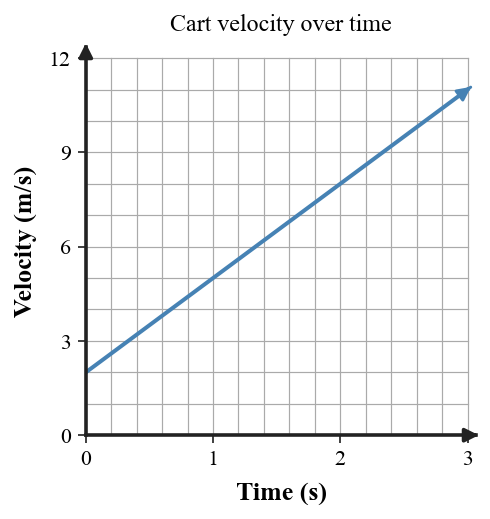

Students will analyze motion conceptually and quantitatively by describing motion relative to a frame of reference, distinguishing speed from velocity, interpreting acceleration as a change in velocity, modeling free fall, and using graphs, diagrams, data, and equations to explain how motion changes over time.
| Rung | I Can Statement | DOK | Level |
|---|---|---|---|
| 8 | I can design, defend, or critique a motion model for an unfamiliar situation using words, data, graphs, formulas, and velocity vectors. | DOK 4 | Above |
| 7 | I can compare two competing motion explanations or models and justify which one better fits the evidence. | DOK 4 | Above |
| 6 | I can connect a motion graph, data table, velocity-vector diagram, and written scenario to explain how an object’s motion changes over time. | DOK 3 | Essential |
| 5 | I can identify and correct a misconception about speed, velocity, acceleration, free fall, or reference frames using a clear physics explanation. | DOK 3 | Essential |
| 4 | I can calculate speed, time, distance, acceleration, free-fall speed, or free-fall distance in simple situations and interpret the answer in context. | DOK 2 | Essential |
| 3 | I can interpret motion diagrams, simple graphs, data tables, and velocity vectors to describe motion. | DOK 2 | Essential |
| 2 | I can define and recognize key terms such as reference frame, speed, velocity, acceleration, free fall, and velocity vector. | DOK 1 | Essential |
| 1 | I can recognize whether an object is at rest, moving at constant speed, changing speed, changing direction, or accelerating. | DOK 1 | Essential |
Format: 3–5 minute warm-up, quick check, card sort, image prompt, graph identification, mini-whiteboard response, or exit ticket
Purpose: Check whether students can recognize basic motion vocabulary, identify motion states, interpret simple visual representations, and distinguish speed, velocity, acceleration, free fall, and reference frames.
A passenger sits on a moving train. Name one reference frame in which the passenger is at rest and one in which the passenger is moving.
Classify each as speed or velocity: 9 m/s; 9 m/s south; 45 km/h east; 45 km/h.
Complete the statement: The rate at which velocity changes is called __________.
A falling object is acted on only by gravity. Name this type of motion.
In one sentence, distinguish average speed from instantaneous speed.
A motion diagram has equal spacing between successive dots. What motion pattern does that suggest?
A cyclist travels around a curve at constant speed. Is the cyclist’s velocity constant or changing?
At the highest point of a ball thrown straight up, its speed is momentarily zero. Is its acceleration zero or nonzero?
Format: Exit ticket, partner check, graph interpretation, data-table task, short calculation, diagram task, or whiteboard response
Purpose: Check whether students can apply motion formulas, interpret simple motion diagrams and graphs, use data to describe motion, and connect numerical results to physical meaning.
A runner covers 150 m in 12 s. Calculate average speed using $v=\frac{d}{t}$ and explain what the result means in context.
A scooter travels at a constant 8 m/s for 25 s. Find the distance using $d=vt$ and explain what assumption makes this model appropriate.
A skateboarder changes velocity from 3 m/s east to 12 m/s east in 3 s. Calculate acceleration and explain what the sign/direction tells you.
A boat moves north at 6 m/s, then turns east while keeping a speed of 6 m/s. Compare its speed and velocity before and after the turn.
A pebble is dropped from rest. Using $g\approx10\text{ m/s}^2$, find its speed after 3 s and explain the pattern of speed change.
A ball is dropped from rest for 2.5 s. Use $d=\frac12gt^2$ with $g\approx10\text{ m/s}^2$ to estimate the distance fallen and explain why the distance per second is not constant.
Use the data and velocity-time graph to determine acceleration and describe the velocity pattern.
| Time | 0 s | 1 s | 2 s | 3 s |
|---|---|---|---|---|
| Velocity | 2 m/s | 5 m/s | 8 m/s | 11 m/s |

Sketch a velocity-vector sequence for an object moving west at constant velocity. Then explain how arrow direction and length should behave over time.
Format: Constructed response, graph explanation, misconception analysis, CER, ranking task, gallery walk, or group whiteboard defense
Purpose: Check whether students can reason strategically, explain changing motion, connect multiple representations, and correct common misconceptions.
Two runners both move at 6 m/s, but one runs east and the other runs west. Explain why matching speed does not guarantee matching velocity, then state what information velocity includes.
A car moves around a circular track at steady speed. Explain why it is accelerating even though the speedometer reading does not change.
A dropped object’s speed changes by about 10 m/s every second. Explain how that pattern is evidence of approximately constant acceleration.
A student claims that a ball has no acceleration at the top of its upward path because its speed is zero for an instant. Critique the claim using free-fall reasoning.
A person walks toward the front of a bus while the bus moves down the road. Compare the person’s motion from the bus frame and the road frame.
A cart’s recorded velocities are 1, 4, 7, and 10 m/s at one-second intervals. Explain how the data support a claim of constant acceleration.
A coin and a flat sheet of paper are dropped in air and then in a vacuum. Explain why the outcomes differ and what role air resistance plays.
A constant-velocity vector diagram shows arrows getting longer at each time step. Analyze the error and describe how the vectors should be revised.
Format: Performance task, extended response, investigation reflection, motion-modeling task, critique task, or strategy defense
Purpose: Check whether students can synthesize data, graphs, velocity vectors, formulas, and conceptual explanations in unfamiliar real-world situations.
A toy car is claimed to move at constant speed. Describe what its motion-diagram spacing and distance-time graph should look like, and explain how both representations would support the claim.
Two students model a ball thrown upward. One says acceleration changes from upward to zero to downward; the other says acceleration stays downward. Decide which model fits free fall and justify it.
Design a short investigation that distinguishes constant speed from acceleration using a cart or rolling object. Include measurements, a data pattern, and how you would interpret it.
A model of a dropped ball shows equal distances traveled during every one-second interval. Critique the model and describe a corrected representation.
A drone flies east at constant speed, then turns north without changing speed. Build a motion model using words and velocity vectors, and defend whether it accelerates.
A ramp-cart table shows velocity increasing by nearly the same amount each second, but a student calls the motion “constant velocity.” Evaluate the claim and use the data pattern to support your conclusion.
Create a short real-world scenario in which speed stays constant while velocity changes. Identify the reference frame and explain what evidence would show acceleration.
Compare two ways to represent an accelerating object—data table and velocity vectors. Explain what feature in each representation would indicate the same acceleration pattern.